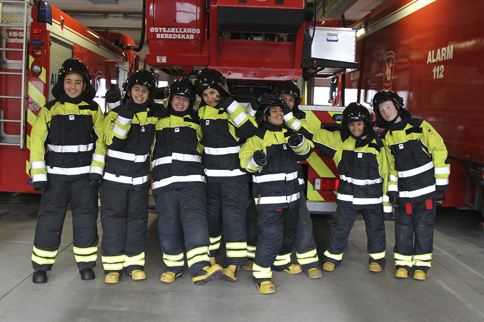
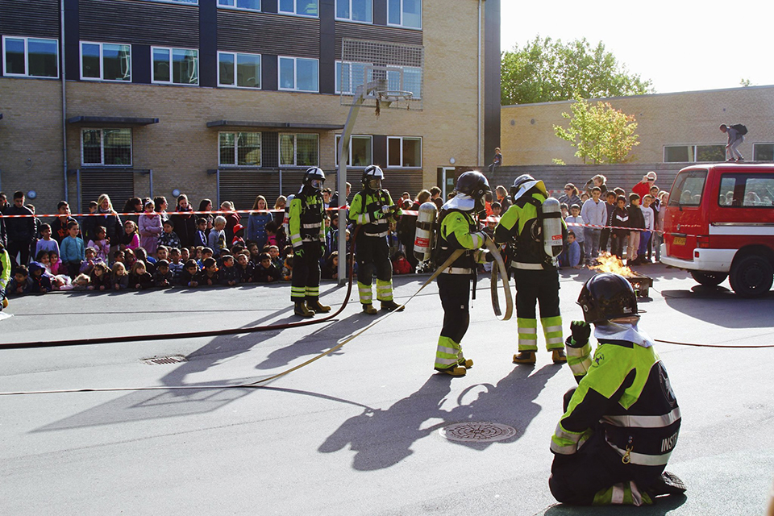
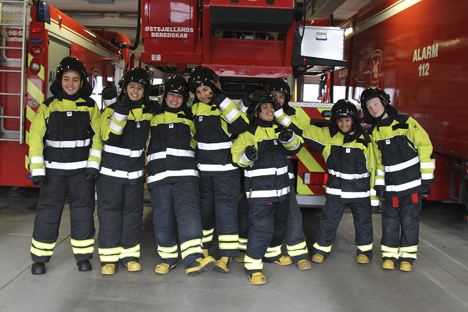
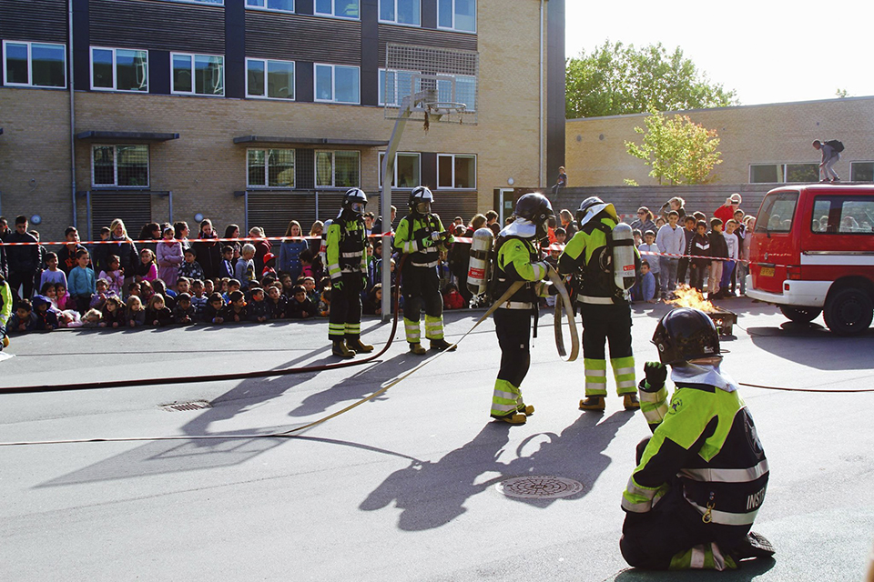

Ildfluer i aktion
Den 1. december holdte Ildfluerne opvisningsshow på Strandgårdskole. Efter en uges hårdt arbejde fremviste de, hvad de havde lært på brandstationen.
 



Den 1. december holdte Ildfluerne opvisningsshow på Strandgårdskole. Efter en uges hårdt arbejde fremviste de, hvad de havde lært på brandstationen.
Skrevet af Pernille, medarbejder